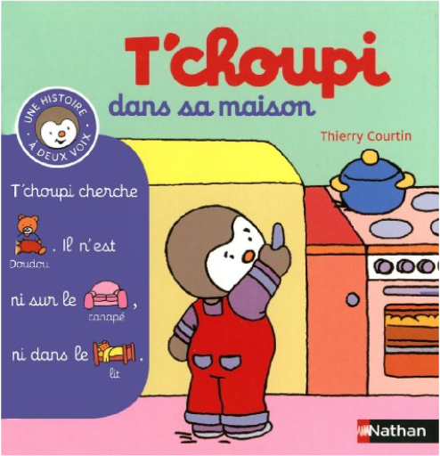
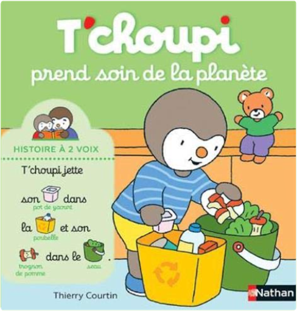

Books
Movies
Albums
Videogames
Games
BD
BD Camille
Blu-ray
Business
Camille
Comics
Cooking
Lego
Manga
Pauline
Photography
Sport
Star Wars
T'choupi
Travel
TV Shows
Un livre dont vous êtes le héro
Vinyl
Walt Disney
16
17
18
19
20
T'choupi, histoire à deux voix, tome 11 : à l'école
Thierry Courtin

T'choupi, histoire à deux voix, tome 12 : dans sa maison
Thierry Courtin
T'choupi, histoire à deux voix, tome 13 : chez le docteur
Thierry Courtin
T'choupi, histoire à deux voix, tome 14 : et les jouets
Thierry Courtin
T'choupi, histoire à deux voix, tome 15 : et la cuisine
Thierry Courtin
T'choupi, histoire à deux voix, tome 16 : et le père noël
Thierry Courtin
T'choupi, histoire à deux voix, tome 17 : a de nouveaux habits
Thierry Courtin
T'choupi, histoire à deux voix, tome 18 : et les bébés animaux
Thierry Courtin

T'choupi, histoire à deux voix, tome 19 : prend soin de la planète
Thierry Courtin
T'choupi, histoire à deux voix, tome 20 : au poney club
Thierry Courtin
T'choupi, histoire à deux voix, tome 21 : et les émotions
Thierry Courtin
T'choupi, histoire à deux voix, tome 22 : Champion de sport
Thierry Courtin
16
17
18
19
20


 Made with Delicious Library Made with Delicious Library
Made with Delicious Library Made with Delicious Library